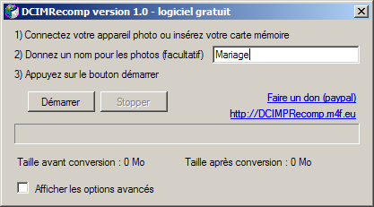
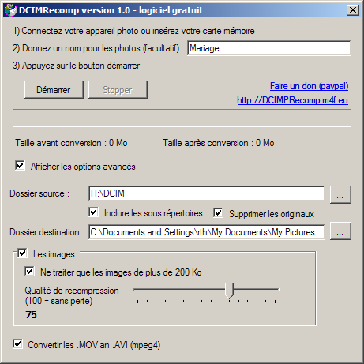

DCIMRecomp, pour simplifier le transfert de vos photos.
Capture écran en mode simple  |
Idéal dans le cadre d'une utilisation familiale, DCIMRecomp transfert et recompresse les photos JPEG et les films MOV de vos appareils photos vers votre ordinateur pour vous simplifier la vie et gagner de la place. |
Capture écran en mode avancées  |
Fonctionnement ultra simple, utilisable par tous. Mémorise les paramètres. Réglez une fois, utilisez avec un seul clic. DCIMRecomp conserver vos dates de fichier et vos données EXIF. |
Ce logiciel est gratuit, vous pouvez faire un don de 1 euro (ou plus) par carte bancaire (Paypal) si vous l'utilisez.
Le programme d'installation est ici
Constatation
Les appareils photos numériques créent des photos de la meilleur qualité possible. Pour une utilisation familiale cette qualité est trop importante et il est possible de recompresser les photos et ainsi gagner de la place (facteur 3 environ)
Les films au format MOV prennent beaucoup moins de place avec une compression au format MPEG4.
Installation sur XP
Fonctionne sur Windows 2000 Service Pack 4; Windows Server 2003; Windows XP Service Pack 2 et supérieur
Pour cela vous devez installer le Microsoft .NET Framework 2.0 (déjà présent sur 2003, Vista et Windows 7)
Si vous avez le dossier C:\WINDOWS\Microsoft.NET\Framework\v2.0.50727 présent sur votre machine alors vous avez déjà le .NET Framework 2.0
Utilisation
Le dossier source correspond bien souvent à votre appareil photo.
Le dossier destination correspond bien souvent à votre dossier "Mes images"
Cochez "les images" pour traiter les images
Cochez "ne traiter que les images de plus de 200 Ko" si votre appareil stocke une imagette de vos films
La qualité de recompression JPEG entre 25 et 100. Je conseille 75.
Cochez "Convertir les .MOV en .AVI (mpeg4)" pour traiter les films
DCIMRecomp conserver la date de vos fichiers et vos données EXIF
Qualité
J'ai effectué le test suivant : Image d'un appareil Sony Alpha-350
Taille d'origine 4.27 Mo, taille après recompression qualité 75 = 1.14 Mo (facteur de réduction 3.7)
J'ai affiché le détail des deux image, zoom 1, cote â cote. Quel est l'image d'origine, quel est l'image recompréssée?
Un expert le trouve rapidement. Réponse en bas de page (*)
Je conseille d'utiliser ce logiciel pour des photos que vous ne désirez pas développer en grand format.
Support technique
Pas de support technique. Seul les questions posés dans le Google Group DCIMRecomp seront prise en compte.
Vous pouvez aussi utiliser ce groupe pour parler des évolutions
Auteur : Rémi THOMAS
Contact : envoyez un mail à dcimrecomp arobase m4f point eu
(*) L'image d'origine est à gauche.
{kind=link}